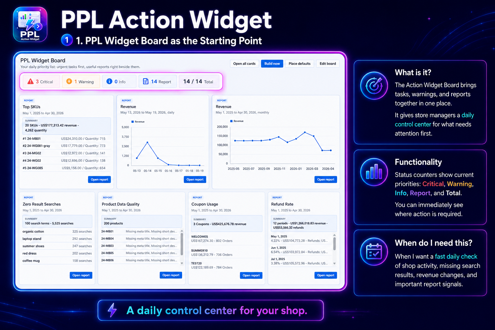
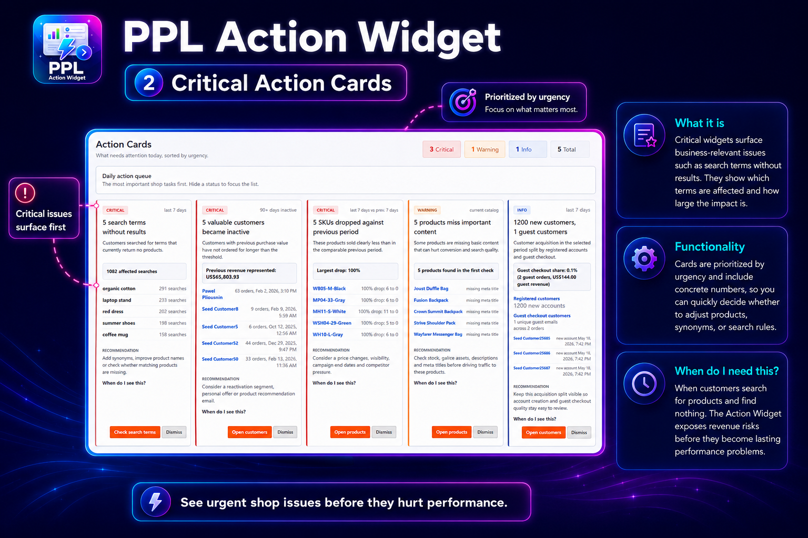
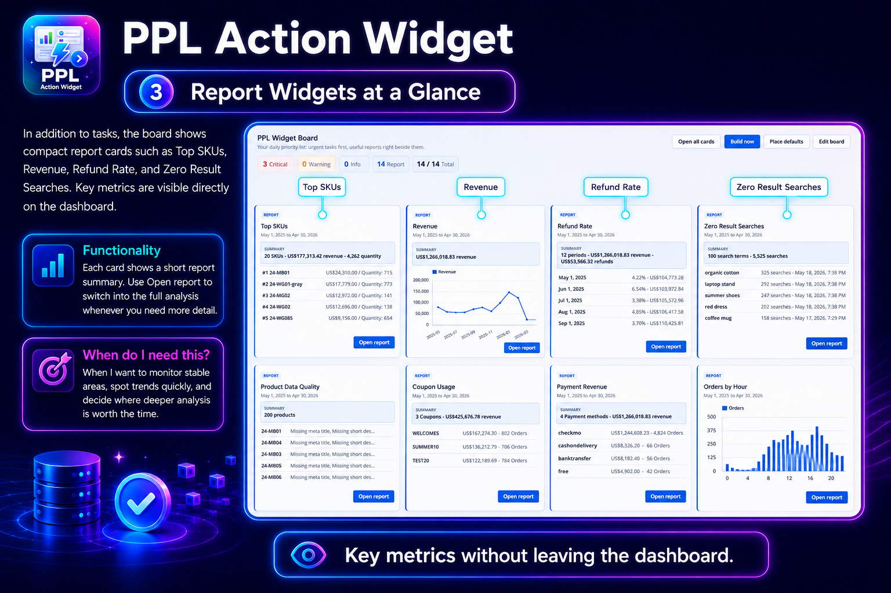
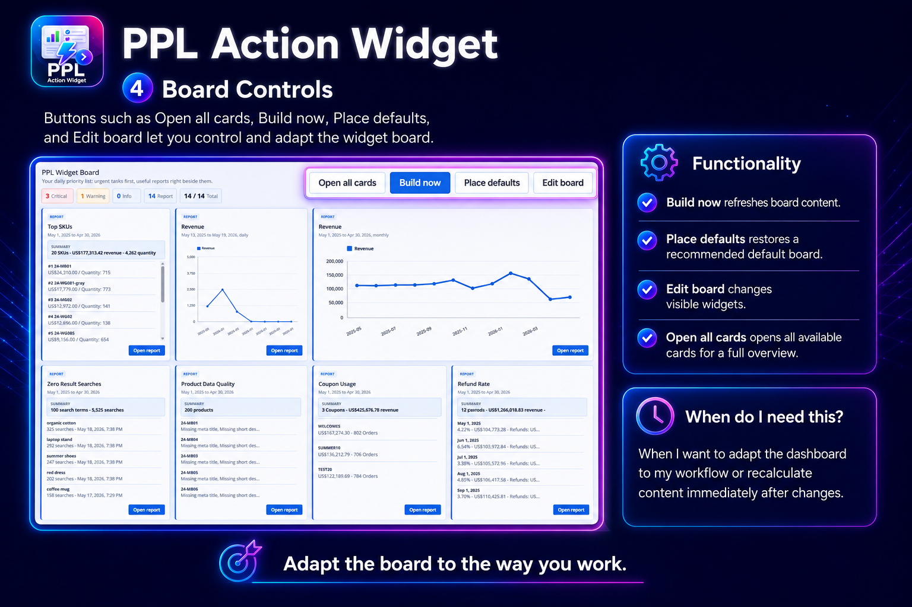

1. Board overview
Status counters show critical, warning, info, report and total cards so admins can scan the day's priorities quickly.
Action Widget turns shop signals and PPL report data into prioritized Magento admin cards. Store teams see what needs attention first, why it matters and where to continue.

The module adds an operational board inside Magento admin. It combines urgent action cards with compact report widgets, so a daily review starts in one place instead of several report screens.
The four storyboard screens show the intended daily admin path: start with the board, inspect urgent cards, keep report context nearby and adjust the layout when the workflow changes.
Status counters show critical, warning, info, report and total cards so admins can scan the day's priorities quickly.

Urgent cards surface business-relevant issues such as zero-result searches, inactive customers, SKU drops and missing product content.

Report cards keep Top SKUs, Revenue, Refund Rate, Zero Result Searches and other metrics visible without leaving the board.

Build now refreshes snapshots, Place defaults restores the recommended board and Edit board controls which widgets are visible.
Action Widget ships with detector families for common ecommerce operating risks. Each detector creates normalized card data with the context an admin needs before opening the related Magento area.
Find customer search terms that returned no products and point admins toward synonyms, naming fixes or missing catalog coverage.
Flag products viewed but not bought, stock-out risk, SKU performance drops and missing product content that can hurt conversion.
Highlight inactive customers, new customer acquisition and guest checkout share so follow-up work is easier to prioritize.
Expose expensive coupon usage and payment cancellation patterns before they become harder to explain from monthly totals.
Show abandoned carts and add-to-cart activity without purchase, with links back to the relevant Magento admin areas.
Place compatible PPL Report Core widgets on the same board, including revenue, top SKU, refund, coupon and zero-result report cards.
The board is designed for repeated checks, not one-off analysis. Heavy calculations are built into snapshots, and each admin can clear items they have already reviewed.
Cron builds action snapshots and the Build now control lets admins refresh the board after configuration or catalog changes.
Default cards can be restored, and the board layout can be edited to match the team's reporting routine.
Reviewed cards can be dismissed per admin, and card data can be exported for follow-up outside Magento.
PPL Hub provides the admin entry point. PPL Report Core provides report widget compatibility and shared report behavior.
Install it when a store already has useful data but the admin team needs a clearer daily priority list. Action Widget does not replace detailed reports; it turns selected report and store signals into concrete next steps.